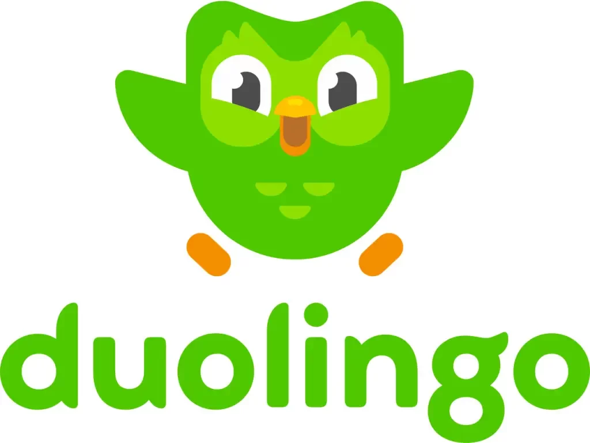

Melhores sites para aprender inglês em 2024!
-

O Duolingo é uma plataforma de aprendizado de idiomas que combina lições interativas, exercícios de prática e gamificação para tornar o aprendizado de uma nova língua divertido e envolvente. Com uma variedade de idiomas disponíveis e um sistema adaptativo, o Duolingo se adapta ao seu ritmo de aprendizado, tornando mais fácil do que nunca começar a aprender um novo idioma.
Duolingo
-
Babbel é uma plataforma de aprendizado de idiomas que se concentra em proporcionar aos usuários uma experiência de aprendizado prática e eficiente. Com a sua abordagem baseada em situações do dia a dia e exercícios interativos, Babbel ajuda os alunos a adquirirem habilidades linguísticas úteis desde o início. Os cursos são projetados por especialistas linguísticos e adaptados às necessidades individuais de cada aluno, tornando o aprendizado de um novo idioma acessível e eficaz.
Babbel
-
Busuu é uma comunidade global de aprendizado de idiomas que oferece cursos interativos em diversos idiomas. Além das lições padronizadas, Busuu também oferece a oportunidade de praticar suas habilidades de conversação com falantes nativos através de interações diretas. Com a sua abordagem focada na comunidade e na prática real, Busuu ajuda os alunos a desenvolverem confiança e fluência em um novo idioma de forma rápida e eficaz.
Busuu
-
Italki é uma plataforma de aprendizado de idiomas que conecta alunos a professores particulares de todo o mundo. Com uma variedade de idiomas e professores disponíveis, os alunos podem encontrar o instrutor certo para suas necessidades específicas de aprendizado. Além das aulas particulares, Italki também oferece recursos adicionais, como correção de redações e interações com falantes nativos, para ajudar os alunos a aprimorarem suas habilidades linguísticas de forma prática e eficaz.
Italki
-
Open English oferece aulas de inglês online com instrutores ao vivo, permitindo que os alunos aprendam e pratiquem o idioma em um ambiente interativo e personalizado. Com aulas disponíveis 24 horas por dia, 7 dias por semana, os alunos podem estudar no seu próprio ritmo e receber feedback personalizado dos instrutores. Além das aulas ao vivo, Open English também oferece uma variedade de recursos de aprendizado, como exercícios de prática e materiais de estudo, para ajudar os alunos a alcançarem seus objetivos linguísticos.
Open English